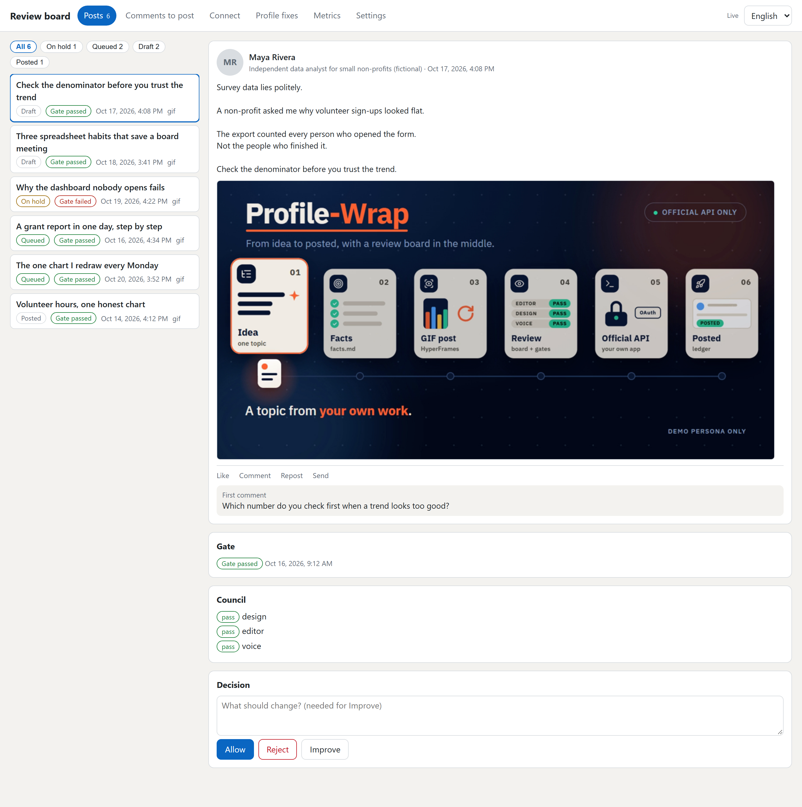

Profile-Wrap
Your LinkedIn, on autopilot. You stay the boss.
A free, open-source LinkedIn post manager. Nothing goes out until you tap Allow.

3 steps. That is all.
Install it
Ask for your week of posts
Tap Allow on each post you like
Every post waits for you.
Your board shows each post first. You say go.

What it does for you
Checks every post before it goes out
Writes them in your voice
Uses your own AI account
ChatGPT, Claude or Gemini.
Shows you each one first
You approve.
Posts at a good time
Works in English and Arabic
Side by side.
Want to see a person's recent posts? The command profile-wrap read posts can ask two free tools, Apify and Tavily, and then public pages. All are optional and off by default, and you accept the risk of each one yourself.
Is it safe?
- It uses LinkedIn's own official way in.
- It never asks for your LinkedIn password.
- It never reads your private messages.
- Nothing goes out unless you tap Allow.
Pick how you want it.
All free.
Plugin
For Claude Code and Codex.
Install stepsSkills
For any AI agent that reads skills.
Get the skillsMCP server
For any app that speaks MCP.
Set it upDesktop app
No AI app? Use this. Windows, Mac and Linux.
Get the app
Questions
Is it free?
Yes. The app is free. Writing uses your own AI account (ChatGPT, Claude, Gemini, or a free local one).
Do I need to code?
No. Install, ask, tap. That is it.
Mac or Windows?
Both. Linux too.
Arabic?
Yes. Arabic and English, side by side.
What if I don't like a post?
Tap Reject, or ask for a better one. Nothing posts without you.
My computer asks "are you sure?". Is that normal?
Yes. The app is new and unsigned, so your computer may ask once. The picture guide shows what to tap.
Free, and you can stop any time.
Profile-Wrap is free under the MIT licence.